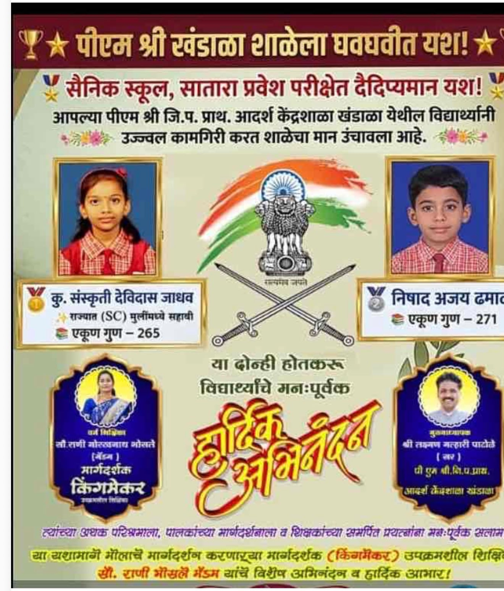
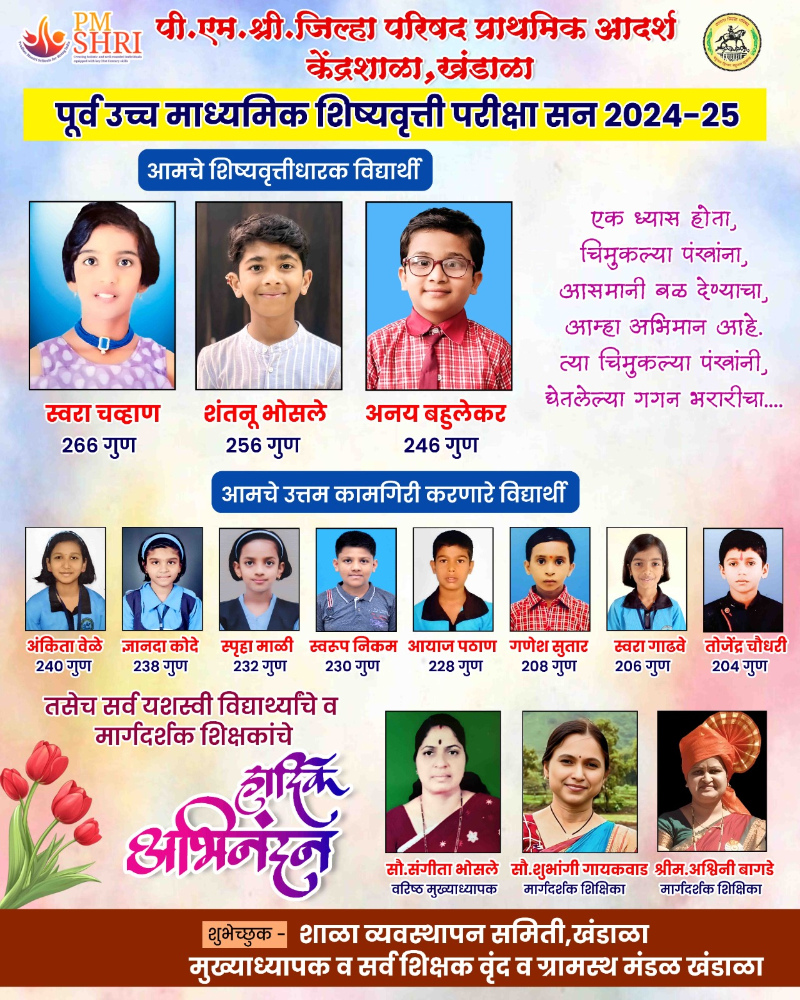
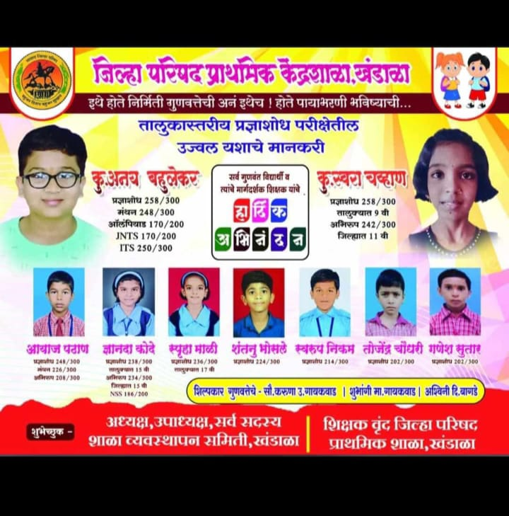
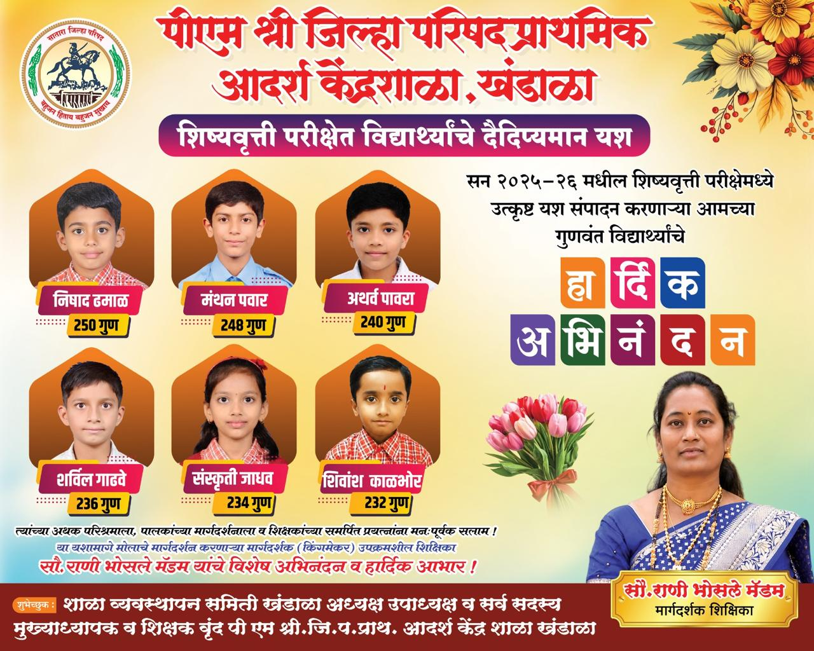

| विद्यार्थी | विशेष प्राविण्य | मार्गदर्शक शिक्षक |
|---|---|---|
| कु. पूर्वा राजेंद्र चुटे | शिष्यवृत्ती 2014-15 | — |
| हर्षद गणेश गाडवे | शिष्यवृत्ती 2018-19 | सौ. करुणा गायकवाड |
| विनय संदीप राऊत | शिष्यवृत्ती 2018-19 | सौ. शुभांगी गायकवाड |
| कु. दुर्वा गणेश राऊत | शिष्यवृत्ती 2018-19 | — |
| कु. श्रेया यशवंत वळवी | नवोदय पात्र 2018-19 | — |
| कु. आरुषी विनोद खंडागळे | शिष्यवृत्ती 2021-22 | श्रीम. विद्यादेवी अवघडे |
| ओम प्रकाश लिंबकर | शिष्यवृत्ती 2022-23 | सौ. सारिका विक्रम चव्हाण |
| स्वराज ज्ञानेश्वर खंडागळे | शिष्यवृत्ती 2022-23 | — |
| सारंग सोमनाथ गर्जे | शिष्यवृत्ती 2022-23 | — |
| अर्णव संदीप भुजबळ | शिष्यवृत्ती 2023-24 | श्री. केशव ज्ञानेश्वर कोतड |
| विद्यार्थी | वर्ष | मार्गदर्शक शिक्षक |
|---|---|---|
| प्राजक्ता बाळकृष्ण माने | — | — |
| प्रियांका अनिल चौधरी | — | — |
| सुजीत सोपान गाढवे | — | — |
| अनघा सोपान चव्हाण | — | — |
| अय्याज शब्बीर मुल्ला | — | — |
| सागर गजानन घाडगे | — | — |
| प्रसाद सुरेश पवार | — | — |
| हसन अलीभाई पटेल | — | — |
| प्रसाद कल्याण तवगद | — | — |
| सुमित अनिल धायगुडे | — | — |
| धोंडीराम धनसिंग राठोड | — | — |
| देवयानी रविंद्र गाढवे | — | — |
| श्रद्धा विजय फडतरे | — | — |
| गौरी धनाजी शिंदे | — | — |
| ज्ञानंद राजाराम पाटील | 2005-06 | सौ. गायकवाड |
| कीर्ती अरविंद भोसले | 2006-07 | सौ. पाटील |
| अभिषेक सुनिल मालगे | 2006-07 | सौ. शिंदे / श्री. जाधव |
| प्रतिक प्रकाश जाधव | 2008-09 | सौ. कांबळे |
| कु. प्राची दत्तात्रय गोंभरे | 2010-11 | सौ. करुणा गायकवाड |
| कु. नेहा बिभीषण गोडसे | 2010-11 | सौ. रोहिणी धमाळ |
| सचिन कृष्णा पुजारी | 2011-12 | सौ. संगिता भोसले |
| प्रथमेश ज्ञानेश्वर पवार | 2011-12 | — |
| वेदांती राजाराम राणे | 2011-12 | श्रीम. संगिता पवार |
| मानसी प्रकाश जाधव | 2011-12 | सौ. बोपर्डीकर |
| साक्षी दिपक खंडागळे | 2012-13 | रोहिणी शिंदे |
| पृथ्वीराज ज्ञानेश्वर पवार | 2012-13 | विद्यादेवी अवघडे |
| आदिती खंडागळे | 2012-13 | रोहिणी धमाळ |
| जय संतोष खंडागळे | 2013-14 | अंजुम पटेल |
| यश संतोष खंडागळे | 2013-14 | — |
| सार्थ वैभव धायगुडे | 2013-14 | संपत वाघ |
| स्पर्धा / तपशील | क्रमांक व वर्ष |
|---|---|
| बालनाट्य स्पर्धा (तालुका) | प्रथम — 2002, 2003 |
| गीतमंच स्पर्धा (जिल्हा स्तर) | द्वितीय — 2000, 2001, 2003 |
| प्रश्नमंजुषा | प्रथम — 2003 |
| मुले-खो-खो (लहान गट) | द्वितीय — 2003 |
| विज्ञान प्रदर्शन (तालुका) | प्रथम — 2003 |
| उषा हरी पवार (जिल्हा वक्तृत्व स्पर्धा) | द्वितीय — 2002 |
| वैशाली गायकवाड | द्वितीय — 2003 |
| अजिंक्य रमेश जाधव | द्वितीय — 2002 |
| कादंबिनी च. पाटील (चित्रकला स्पर्धा) | तृतीय — 2002 |
| अंबिका रा. कुंभार (जिल्हा स्तर) | द्वितीय — 2002 |
| लोकसंख्या शिक्षण | प्रथम — 2001 |
| शैक्षणिक साहित्य निर्मिती | प्रथम — 2001 |
| इंग्रजी हस्तपुस्तिका (जि. 1ली) | प्रथम — 2002 |
| हसन अलीभाई पटेल | छ. शाहू आदर्श विद्यार्थी पुरस्कार |
| एकपात्री प्रयोग (शिक्षक) | प्रथम — 2004 |
| कुटुंब कल्याण उत्कृष्ट काम | प्रथम — 2003 |
| इंग्रजी शैक्षणिक साहित्य (जि. 5वी) | प्रथम — 2004 |
| कुमार बाळू जाधव — गीतमंच (लहान गट), लोकनृत्य (लहान गट) | जिल्हा स्तर तृतीय — 2019-20 |